Contents
HW 3, Problem 1
ELEC 5530 - Thaddeus Roppel 2012/09/04 Markus Kreitzer, Levi Smolin, Ray Preston
clear all;
clc;
Declare Constants
Zeta_I0 = [0;0;0]; % Initial position r_w = 1; % wheel radius l = 1; % half the vehicle wheelbase theta = pi/2; R_inv_theta = [ cos(theta), -sin(theta), 0; sin(theta), cos(theta), 0; 0, 0, 1 ]; phi_dot_1 = 1; %wheel 2 (left wheel) angular rate (phi2-dot)
Run through six different scenarios where the wheel velocities vary.
scenarios = [1 2 3 4 5 6]; for phi_dot_2 = scenarios % Velocity matrix of the Zeta_I_dot = R_inv_theta * [ (r_w * phi_dot_1)/2 + (r_w .* phi_dot_2)/2; 0; (r_w * phi_dot_1)/(2*l) - (r_w .* phi_dot_2)/(2*l) ]; % 0 to 20 seconds t = 0:.1:20; % Matrix with positions throughout time. Zeta_I = [ Zeta_I_dot(1) * cos(Zeta_I_dot(3) * t); Zeta_I_dot(2) * sin(Zeta_I_dot(3) * t); Zeta_I_dot(3) * t ]; x = Zeta_I(1,:); y = Zeta_I(2,:); figure plot(x,y) %produces a 2-D plot xlabel('x'); ylabel('y'); figure scatter3(x,y,t) %produces a 3-D trajectory plot xlabel('x'); ylabel('y'); zlabel('time'); end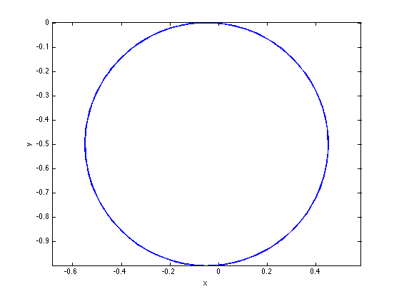


 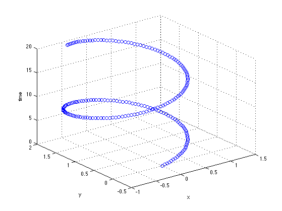 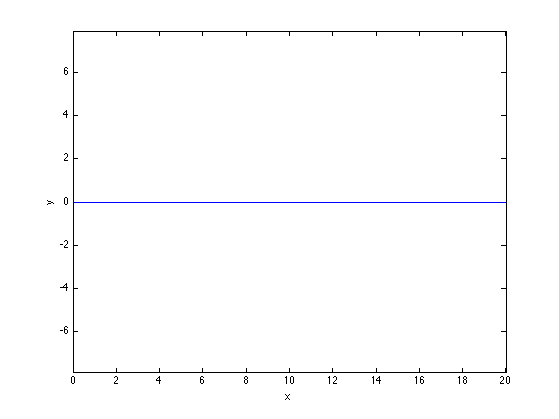 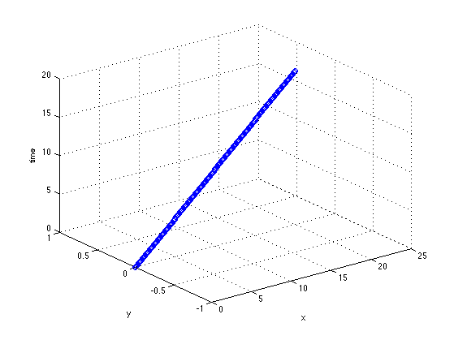
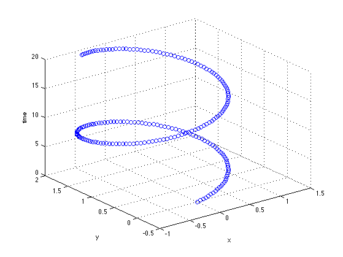 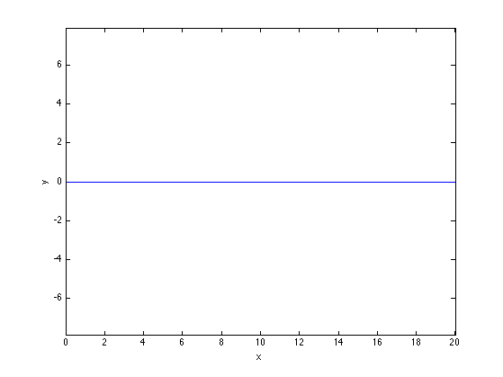 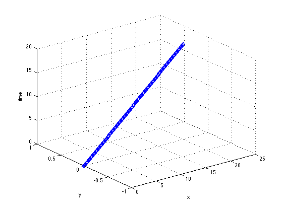  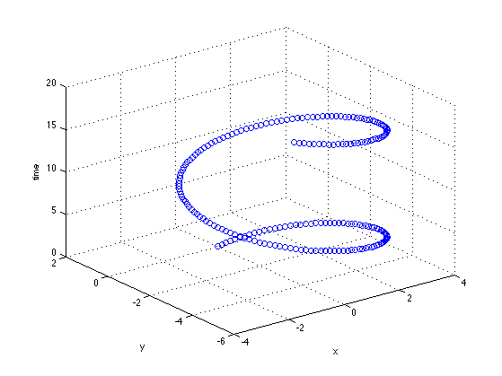
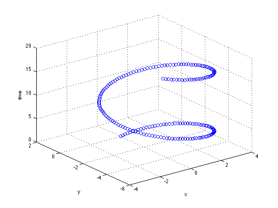 Dr. Roppel's Original Code (To Be Removed)
%simulation of trajectory for the case in which %both wheels are turning at a constant rate. r = 1; %wheel radius c2 = 1; %wheel 2 (left wheel) angular rate (phi2-dot) a = 2; %ratio of wheel 1 (right wheel) to wheel 2 speed l = 1; %half the wheelbase x0 = 0; %inital global x position y0 = 0; %initial global y position t = 0:.1:20; x = x0+l*((a+1)/(a-1))*sin((r/2/l)*(a-1)*c2*t); y = y0-l*((a+1)/(a-1))*(cos((r/2/l)*(a-1)*c2*t)-1); figure plot(x,y); %produces a 2-D plot axis equal xlabel('x') ylabel('y') figure scatter3(x,y,t); %produces a 3-D trajectory plot xlabel('x') ylabel('y') zlabel('time')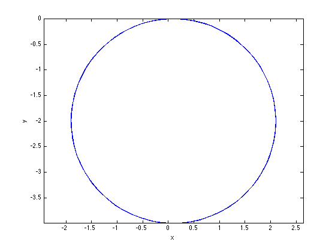 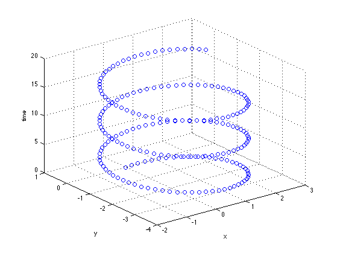